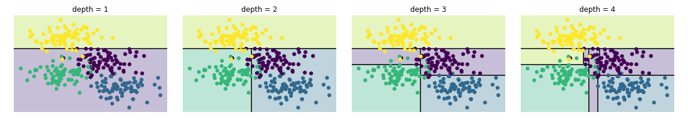

Bu sayfa orijinal kitap bölümünün eksiksiz Türkçe uyarlamasıdır — atlanan başlık/kod yoktur. Zor yerlerde ek ders notu ve 🧪 Şimdi deneyin kutuları vardır.
Orijinal (EN): 05.08 Random Forests · Jupyter notebook
5.8 Derinlemesine: Karar Ağaçları ve Rastgele Ormanlar
Orijinal: 05.08 Random Forests
Daha önce basit bir üretici sınıflandırıcıyı (naive Bayes; bkz. 5.5 Naive Bayes) ve güçlü bir ayırt edici sınıflandırıcıyı (destek vektör makineleri; bkz. 5.7 SVM) derinlemesine inceledik. Burada rastgele ormanlar adlı güçlü parametrik olmayan bir algoritmaya bakacağız.
Rastgele ormanlar, daha basit tahmin edicilerin sonuçlarını birleştiren topluluk (ensemble) yöntemine bir örnektir. Şaşırtıcı biçimde böyle yöntemlerde bütün, parçaların toplamından büyük olabilir: çok sayıda tahmin edicinin çoğunluk oyu, tek tek oylayanların herhangi birinden daha iyi doğruluk verebilir!
Standart içe aktarmalarla başlayalım:
%matplotlib inline
import numpy as np
import matplotlib.pyplot as plt
plt.style.use('seaborn-whitegrid')helpers_05_08 modülü yalnızca orijinal kitabın ek deposunda bulunur; Pyodide'da etkileşimli ağaç görselleştirmesi çalışmayabilir. Statik karar ağacı örnekleri bu sayfada çalışır.
Rastgele Ormanları Motive Etmek: Karar Ağaçları
Rastgele ormanlar, karar ağaçları üzerine kurulu topluluk öğrenicileridir; bu yüzden karar ağaçlarıyla başlayacağız. Karar ağaçları nesneleri sınıflandırmak veya etiketlemek için son derece sezgisel yöntemlerdir: sınıflandırmaya yönelik bir dizi soru sorarsınız. Örneğin yürüyüşte gördüğünüz hayvanları sınıflandırmak için aşağıdaki şekildeki gibi bir ağaç kurabilirsiniz.

İkili bölme çok verimlidir: iyi kurulmuş bir ağaçta her soru seçenek sayısını kabaca yarıya indirir. Zorluk, her adımda hangi soruların sorulacağına karar vermektir. Makine öğrenmesinde sorular genelde veride eksen hizalı bölümler biçimindedir.
Karar Ağacı Oluşturma
from sklearn.datasets import make_blobs
X, y = make_blobs(n_samples=300, centers=4,
random_state=0, cluster_std=1.0)
plt.scatter(X[:, 0], X[:, 1], c=y, s=50, cmap='rainbow');Bu iki boyutlu veri üzerinde basit bir karar ağacı, veriyi eksenlerden birinde bir eşik değerine göre yinelemeli böler ve her bölgede çoğunluk oyuyla etiket atar (aşağıdaki şekil, ilk dört seviye).

İlk bölmeden sonra üst daldeki her nokta değişmeden kalır; bu dalı daha fazla bölmeye gerek yoktur. Tek renkten oluşmayan her düğümde bölge yine iki öznitelikten biri boyunca bölünür.
Bu uydurma Scikit-Learn'de DecisionTreeClassifier ile yapılır:
from sklearn.tree import DecisionTreeClassifier
tree = DecisionTreeClassifier().fit(X, y)Sınıflandırıcı çıktısını görselleştirmek için bir yardımcı fonksiyon yazalım:
def visualize_classifier(model, X, y, ax=None, cmap='rainbow'):
ax = ax or plt.gca()
# Plot the training points
ax.scatter(X[:, 0], X[:, 1], c=y, s=30, cmap=cmap,
clim=(y.min(), y.max()), zorder=3)
ax.axis('tight')
ax.axis('off')
xlim = ax.get_xlim()
ylim = ax.get_ylim()
# fit the estimator
model.fit(X, y)
xx, yy = np.meshgrid(np.linspace(*xlim, num=200),
np.linspace(*ylim, num=200))
Z = model.predict(np.c_[xx.ravel(), yy.ravel()]).reshape(xx.shape)
# Create a color plot with the results
n_classes = len(np.unique(y))
contours = ax.contourf(xx, yy, Z, alpha=0.3,
levels=np.arange(n_classes + 1) - 0.5,
cmap=cmap, zorder=1)
ax.set(xlim=xlim, ylim=ylim)Karar ağacı sınıflandırmasının nasıl göründüğüne bakalım (aşağıdaki şekil):
visualize_classifier(DecisionTreeClassifier(), X, y)İki blob üzerinde karar ağacı:
from sklearn.datasets import make_blobs
from sklearn.tree import DecisionTreeClassifier
X, y = make_blobs(n_samples=100, centers=2, random_state=0)
clf = DecisionTreeClassifier(max_depth=3)
clf.fit(X, y)
print("Doğruluk:", clf.score(X, y))Not defterini canlı çalıştırıyorsanız, çevrimiçi ek bölümdeki yardımcı betikle karar ağacı oluşturma sürecini etkileşimli gösterebilirsiniz:
# helpers_05_08 is found in the online appendix
import helpers_05_08
helpers_05_08.plot_tree_interactive(X, y);Derinlik arttıkça çok garip şekilli sınıflandırma bölgeleri oluşur; bu, gerçek dağılımdan çok örnekleme veya gürültüye bağlıdır — ağaç aşırı uyum yapmaktadır.
Karar Ağaçları ve Aşırı Uyum

Bazı yerlerde iki ağaç tutarlı, bazı yerlerde çok farklı sonuç verir. Tutarsızlıklar genelde sınıflandırmanın belirsiz olduğu yerlerde olur; iki ağacın bilgisini birleştirirsek daha iyi sonuç elde edebiliriz!
Not defterini canlı çalıştırıyorsanız, verinin rastgele alt kümesiyle eğitilmiş ağaçları etkileşimli gösterebilirsiniz:
# helpers_05_08 is found in the online appendix
import helpers_05_08
helpers_05_08.randomized_tree_interactive(X, y)İki ağaçtan bilgi kullanmak sonucu iyileştirirse, birçok ağaçtan bilgi kullanmanın sonucu daha da iyileştireceğini bekleyebiliriz.
Tahmin Edici Toplulukları: Rastgele Ormanlar
from sklearn.tree import DecisionTreeClassifier
from sklearn.ensemble import BaggingClassifier
tree = DecisionTreeClassifier()
bag = BaggingClassifier(tree, n_estimators=100, max_samples=0.8,
random_state=1)
bag.fit(X, y)
visualize_classifier(bag, X, y)Birden fazla aşırı uyumlu tahmin edicinin birleştirilmesi bagging topluluk yönteminin temelidir. Paralel tahmin edicilerin ortalaması/alınması aşırı uyumu azaltır. Rastgeleleştirilmiş karar ağaçları topluluğuna rastgele orman denir. Aşağıdaki şekilde BaggingClassifier ile manuel bagging gösterilir:
from sklearn.ensemble import RandomForestClassifier
model = RandomForestClassifier(n_estimators=100, random_state=0)
visualize_classifier(model, X, y);Digits verisinde rastgele orman:
from sklearn.datasets import load_digits
from sklearn.ensemble import RandomForestClassifier
from sklearn.model_selection import train_test_split
digits = load_digits()
X_train, X_test, y_train, y_test = train_test_split(
digits.data, digits.target, random_state=0)
rf = RandomForestClassifier(n_estimators=100, random_state=0)
rf.fit(X_train, y_train)
print("Test doğruluğu:", rf.score(X_test, y_test))Burada her tahmin edici eğitim noktalarının rastgele %80'iyle eğitildi. Pratikte bölümlerin nasıl seçildiğine stokastisite enjekte etmek daha etkilidir. Scikit-Learn'de RandomForestClassifier bunu otomatik yapar (aşağıdaki şekil):
Rastgele Orman Regresyonu
rng = np.random.RandomState(42)
x = 10 * rng.rand(200)
def model(x, sigma=0.3):
fast_oscillation = np.sin(5 * x)
slow_oscillation = np.sin(0.5 * x)
noise = sigma * rng.randn(len(x))
return slow_oscillation + fast_oscillation + noise
y = model(x)
plt.errorbar(x, y, 0.3, fmt='o');Rastgele ormanlar regresyonda da kullanılır (RandomForestRegressor). Aşağıdaki veri hızlı ve yavaş salınımın birleşiminden üretilmiştir:
from sklearn.ensemble import RandomForestRegressor
forest = RandomForestRegressor(200)
forest.fit(x[:, None], y)
xfit = np.linspace(0, 10, 1000)
yfit = forest.predict(xfit[:, None])
ytrue = model(xfit, sigma=0)
plt.errorbar(x, y, 0.3, fmt='o', alpha=0.5)
plt.plot(xfit, yfit, '-r');
plt.plot(xfit, ytrue, '-k', alpha=0.5);Gerçek model düzgün gri eğri, rastgele orman modeli kırmızı pürüzlü eğridir. Parametrik olmayan model çok periyotlu veriyi çok periyotlu model belirtmeden uyabilmektedir!
Örnek: Rakamları Rastgele Ormanla Sınıflandırma
from sklearn.datasets import load_digits
digits = load_digits()
digits.keys()Scikit-Learn'in digits veri kümesini kullanacağız. İlk birkaç noktayı görselleştirelim (aşağıdaki şekil):
# set up the figure
fig = plt.figure(figsize=(6, 6)) # figure size in inches
fig.subplots_adjust(left=0, right=1, bottom=0, top=1, hspace=0.05, wspace=0.05)
# plot the digits: each image is 8x8 pixels
for i in range(64):
ax = fig.add_subplot(8, 8, i + 1, xticks=[], yticks=[])
ax.imshow(digits.images[i], cmap=plt.cm.binary, interpolation='nearest')
# label the image with the target value
ax.text(0, 7, str(digits.target[i]))Rakamları rastgele ormanla şöyle sınıflandırabiliriz:
from sklearn.model_selection import train_test_split
Xtrain, Xtest, ytrain, ytest = train_test_split(digits.data, digits.target,
random_state=0)
model = RandomForestClassifier(n_estimators=1000)
model.fit(Xtrain, ytrain)
ypred = model.predict(Xtest)Sınıflandırma raporuna bakalım:
from sklearn import metrics
print(metrics.classification_report(ypred, ytest))Karışıklık matrisini de çizelim (aşağıdaki şekil):
from sklearn.metrics import confusion_matrix
import seaborn as sns
mat = confusion_matrix(ytest, ypred)
sns.heatmap(mat.T, square=True, annot=True, fmt='d',
cbar=False, cmap='Blues')
plt.xlabel('true label')
plt.ylabel('predicted label');Basit, ayarsız bir rastgele orman digits verisinde oldukça doğru sınıflandırma sağlar.
Özet
Bu bölüm topluluk tahmin edicilerine ve özellikle rastgele ormanlara kısa bir giriş sundu.
Rastgele ormanların birkaç avantajı:
- Karar ağaçlarının basitliği sayesinde eğitim ve tahmin çok hızlıdır; paralelleştirilebilir.
- Çoklu ağaçlar olasılıksal sınıflandırma sağlar (
predict_proba). - Parametrik olmayan model esnektir ve yetersiz uyumda iyi performans gösterebilir.
Ana dezavantaj: sonuçlar kolay yorumlanamaz; sınıflandırma modelinin anlamı hakkında sonuç çıkarmak istiyorsanız rastgele ormanlar en iyi seçenek olmayabilir.